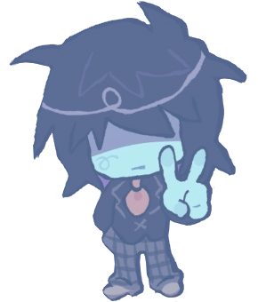
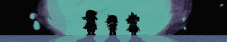
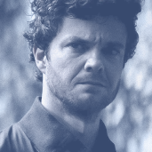
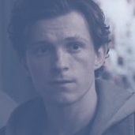
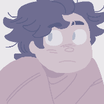
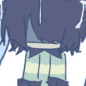
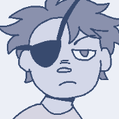
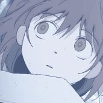
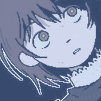

▄▀▄▀▄▀▄▀▄▀▄▀▄▀▄
IT/ITS⠀ + ⠀THEY/THEM ⠀,⠀ ADULT
helloo ! i am siffrin, simon, or asya! a digital trout with an affinity for art and music! i'm an autistic, anxious, avoidant, and chronically tired person, but i love to chat, even if i take a bit to reply! reciprocated kindness and all that!
i was sworn to my paladin ashley on december 8th, 2024!
i currently love the boys, daredevil, rick and morty, severance, the lonely island, persona 3, iasip, palm springs, deltarune, z.a.t.o (iltwaeii), and JACK QUAID!!!

tap / hover the images for info!
fanart credits
morty smith (sorrelpaws) kris dreemurr (flatcoltonxq7)
evil morty (sorrelpaws) simon mcnally (QUAIDPILLED)
siffrin (asuuree) dess (Heartbreak_Juan) makoto yuki (gm70t)

hughie campbell(the boys 2019)
selfhood / id

peter parker(mcu)
selfhood / id

morty smith(rick and morty)
selfhood / id

kris dreemurr(deltarune)
selfhood / id

evil morty(rick and morty)
high attachment
 simon
mcnally
simon
mcnally
(neighborhood watch)
high attachment
 hitori
gotoh
hitori
gotoh (bocchi the rock!)
high attachment

asya shubina(z.a.t.o. // iltwaeii)
high attachment
 mark s. /
scout
mark s. /
scout
(severance)
high attachment
 angel
devil
angel
devil
(chainsaw man)
high attachment
 siffrin
siffrin
(in stars and time)
med attachment
(deltarune)
med attachment
 karen
aijou
karen
aijou
(revue starlight)
med attachment
 makoto
yuki
makoto
yuki
(persona 3)
med attachment
 denji
denji
(chainsaw man)
med attachment
 milk chan
milk chan
(milk in/out a bag)
med attachment
 yuuri
yuuri
(girls last tour)
low attachment
 kyomoto
kyomoto
(look back)
low attachment
i don't really do "doubles" nor like the discourse around that... i enjoy seeing how so many different people can find themselves in the same characters, especially the ones that i do!

HEY! comeee back in a few days, okay? it's 5am at the time of writing this and im tiired and exhausted all of my writing energy. the rest of this page should be all good to go though! see you on the flipside! don't be a stranger! or do! i don't control you!⠀⠀animanga⠀
revue starlight, bocchi the rock, girls last tour,
madoka magica, chainsaw man, space patrol luluco
⠀movies⠀⠀
palm springs, guardians of the galaxy, mcu spiderman,
baby driver, scott pilgrim, whiplash,
aftersun, nimona, spiderverse, i saw the tv glow, backrooms, pizza movie, ntbtstm
⠀⠀tv shows⠀
severance, the boys, daredevil, my adventures with superman, rick and morty, it's always
sunny, parks and recreation,
breaking bad, the good place, peacemaker, brooklyn 99, strip law, the crowded room, aqua teen hunger force, the bear, henry danger

⠀games⠀⠀
persona 3, deltarune, z.a.t.o., cave story, milk in
/ outside a bag of milk, peggle, portal 2, alan wake, hotline miami, undertale,
rhythm heaven
, night in the woods, spider-man ps4, omori, oneshot, transistor, ff14, momodora, celeste, 1bitheart, sunset
overdrive, portal, djmax respect v, left 4 dead 2, ultrakill
⠀⠀miscellaneous⠀
jack quaid, TOME, flowers, art, poetry, psychology, photography,
andy samberg,
adam scott, oc work
⠀jack quaid-specific⠀⠀
novocaine, scheme squad, mountain time live, neighborhood
watch, sea oak, heads of state,
star trek: lower decks,
sasquatch, tragedy girls